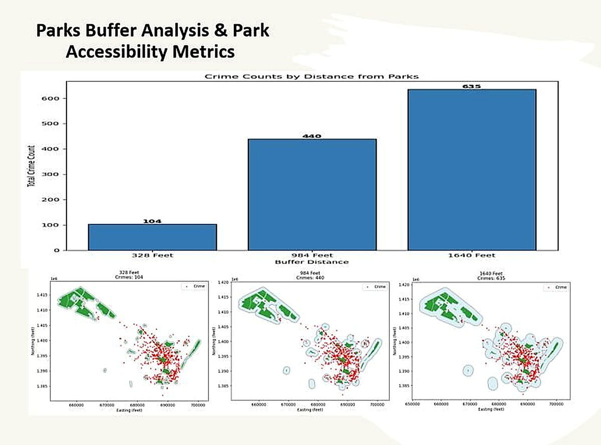
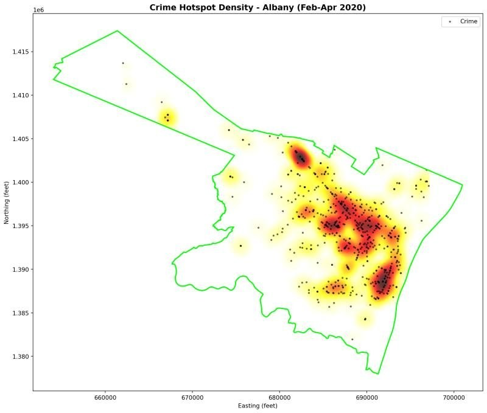
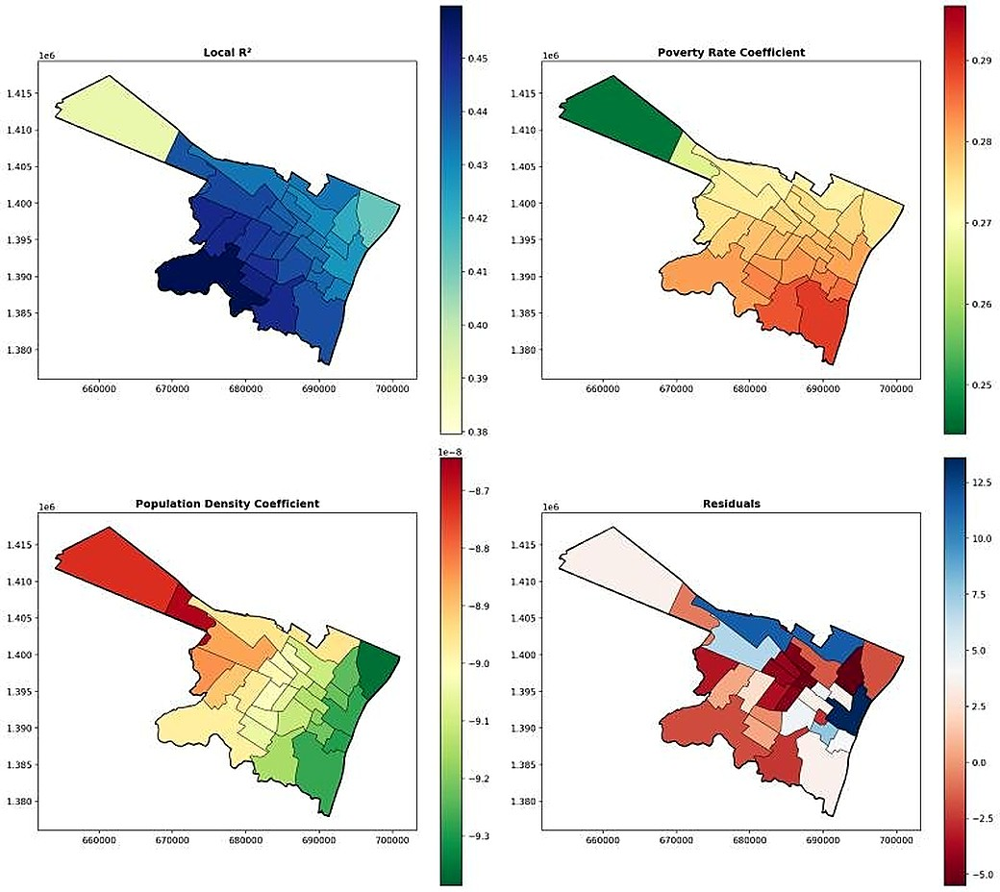

Urban Spatial Analysis
Green Space or Crime Space? A Spatial Analysis of Park Accessibility and Crime Patterns in Albany, NY
2025, SUNY Albany coursework
This project examined the relationship between park accessibility and crime patterns in Albany, NY. Using incident data from February to April 2020, I produced a kernel density estimation surface to map crime hotspots across the city. I then ran multi distance buffer analyses around every Albany park, at 328, 984, and 1,640 feet, to test how crime counts change with proximity to green space.
Crime counts increased with distance from parks: 104 incidents within 328 feet, 440 at 984 feet, and 635 at 1,640 feet. The finding suggests that Albany's parks are located in neighborhoods with lower crime density than surrounding areas, which runs counter to the common assumption that parks attract crime.
To go deeper, I fit a Geographically Weighted Regression model using poverty rate and population density as predictors of crime intensity. Local R squared values ranged from 0.38 to 0.47 across neighborhoods, with poverty rate emerging as a consistent positive predictor and population density showing a small negative effect. Residual maps revealed the spatial structure left unexplained, pointing to where additional covariates may matter.
- ArcGIS Pro
- Python
- Kernel Density Estimation
- Buffer Analysis
- Geographically Weighted Regression
- Albany PD data


